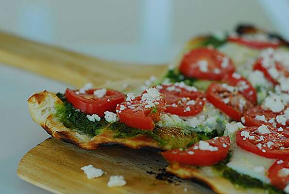

Pesto Pizza

Serves 6-12
In this recipe you will be working with either a store baught pizza dough or try this recipe for a thin crust pizza!.
you can make your own pesto here or we reccomend Barilla i Pesti Genovese with Basil
Ingredients
- 1 (14 inch) pre-baked pizza crust
- ½ cup pesto
- 1 ripe tomato, chopped, thinly sliced
- ½ cup green bell pepper, chopped
- 1 (2 ounce) can chopped black olives, drained
- ½ small red onion, chopped
- 1 (4 ounce) can artichoke hearts, drained and sliced
- 1 cup crumbled feta cheese
Steps
- Preheat oven to 450 degrees F (230 degrees C)
- Spread pesto on pizza crust. Top with tomatoes, bell peppers, olives, red onions, artichoke hearts and feta cheese
- Bake for 8 to 10 minutes, or until cheese is melted and browned